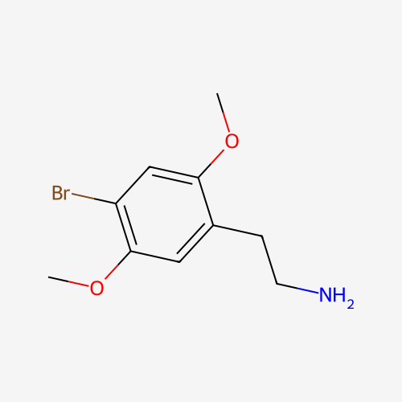

2C-B
4-Bromo-2,5-dimethoxyphenethylamine
Dosage
Doses below are general reference ranges, not recommendations. 2C-B has a narrow gap between a pleasant dose and an overwhelming one, and it is sold as powder, pills, and capsules of unreliable strength. Measure with a milligram scale, start well below the common range, and do not redose in the first few hours.
Oral (mg)
| Level | Dose |
|---|---|
| Threshold | ~5 mg |
| Light | 10–15 mg |
| Common | 15–25 mg |
| Strong | 25–45 mg |
| Heavy | 45 mg+ |
Onset 20–40 minutes, peak 60–90 minutes; total duration is roughly 5–7 hours.
Insufflated (mg)
| Level | Dose |
|---|---|
| Threshold | <1 mg |
| Light | 5–8 mg |
| Common | 8–12 mg |
| Strong | 12–23 mg |
| Heavy | 23 mg+ |
Onset 1–5 minutes, peak 60–90 minutes; total duration is roughly 4–6 hours. Insufflation is reported to be painful and harsh on the nasal passages, and it is not considered safer or more controllable than oral use.
Tolerance: builds slowly, with no cross-tolerance to other serotonergic psychedelics, although a prior LSD dose may change how 2C-B feels.
Source: PsychonautWiki (2C-B).
Overview
2C-B (4-bromo-2,5-dimethoxyphenethylamine) is a synthetic psychedelic phenethylamine, a relative of mescaline with methoxy groups at positions 2 and 5 of the benzene ring and a bromine atom at position 4. It has no known natural source. It acts mainly as a low-efficacy partial agonist at serotonin 5-HT2A receptors, with activity at 5-HT2C receptors thought to shape much of its character, and it may also raise dopamine. The result is often described as sitting between LSD and MDMA: colorful, algorithmic visual patterns with smooth motion, a warm and euphoric body feeling, and a marked increase in sociability, empathy, and sensory enjoyment, with less of the fear and dissolving of self reported for classical psychedelics at common doses. It is short-lived compared with mescaline or LSD.
History
Alexander Shulgin first synthesized 2C-B in 1974 while exploring the psychedelic phenethylamines related to mescaline; the "2C" in the name refers to the two carbon atoms between the benzene ring and the amine group. He described its synthesis and effects in PiHKAL: A Chemical Love Story (1991), where it appears among what he called his "magical half-dozen" — the six compounds he considered most important. In the 1970s and 1980s it saw therapeutic use, valued for its emotional openness and relatively short, manageable duration. Commercial versions were later marketed as "Erox," "Nexus," and "Performax" in adult stores and head shops until the US Drug Enforcement Administration placed 2C-B in Schedule I in 1995. Today it circulates only through the illicit market. It was added to Schedule II of the UN Convention on Psychotropic Substances in 2001.
Effects
Effects begin gradually and are dose-dependent. Light doses bring mild stimulation, enhanced color and music, and an easy mood; common doses add open- and closed-eye patterns and a strongly warm, tactile quality. Internal hallucinations are uncommon at common doses. Higher doses make the experience more intense and less predictable, with more nausea, disorientation, and anxiety. Compared with other psychedelics, anxiety and paranoia are reported at lower intensity, but they do occur, especially in combination with stimulants or cannabis.
- Stimulation
- Warm, tactile "body high"
- Nausea (come-up)
- Elevated heart rate & blood pressure
- Pupil dilation
- Sweating
- Teeth grinding
- Color enhancement
- Closed-eye geometry
- Open-eye patterns
- Tracers & drifting
- Surface morphing
- Internal hallucinations (high doses)
- Euphoria
- Empathy & sociability
- Sensory enhancement
- Thought acceleration
- Time distortion
- Anxiety / paranoia (less common)
- Music enhancement
- Auditory distortions
Research
Modern clinical research on 2C-B is minimal. Most of what is known comes from Shulgin's own reports, early clinical use, animal pharmacology, and user surveys and case reports. Laboratory studies indicate it is a low-efficacy 5-HT2A partial agonist. Its shorter duration and prosocial character are frequently cited as reasons for potential therapeutic interest, but no controlled human trials have established safety or efficacy.
Legal Status
2C-B is a Schedule I controlled substance in the United States and is scheduled in most of Europe. Internationally it is controlled under Schedule II of the UN Convention on Psychotropic Substances (2001). In Canada it is Schedule III. Penalties for possession and sale are significant in most jurisdictions. Check your local laws.
Harm Reduction
Know what you have. Misrepresentation is common. Pink powders sold as "pink cocaine," "tusi," or "tucibi" often contain no 2C-B at all and are instead mixtures of ketamine, MDMA, caffeine, or other drugs, and pills sold as 2C-B may also be something else. Use reagent test kits and, where available, drug-checking services and fentanyl test strips, and take a small test dose first.
Interactions. Do not combine 2C-B with lithium, which significantly increases the risk of psychosis and seizures. Do not combine it with MAOIs, including the harmala alkaloids in Syrian rue and ayahuasca; 2C-B is broken down by monoamine oxidase, so an MAOI can turn an ordinary dose into a dangerous overdose (see the Harmala Alkaloids page). Avoid stimulants and tramadol, which raise the risk of anxiety, psychosis, and seizures, and be cautious with cannabis, which can heighten anxiety unpredictably.
Physical risks. Hypertension, rapid heart rate, and overheating can occur at higher doses, so people with heart conditions or uncontrolled blood pressure should avoid 2C-B. Nausea is common on the come-up; hydrate slowly and do not overdrink. At normal doses 2C-B is unlikely to be neurotoxic, but overdose can cause severe agitation, seizures, and dangerous overheating, so seek emergency help if these occur. People with a personal or family history of psychosis should avoid it. Use in a safe setting with a trusted, sober person present, and do not drive.
Further Reading
2C-B is a close relative of mescaline. Learn more about the phenethylamine psychedelic that inspired it.
Mescaline →This page is for educational purposes only. Nothing here constitutes legal, medical, or therapeutic advice. Know your local laws.